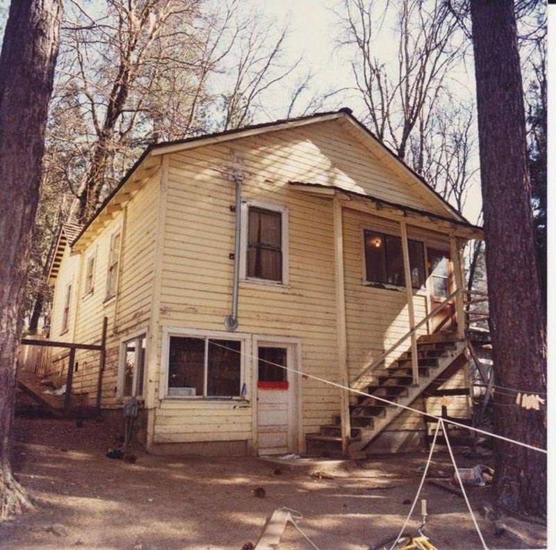

Keddie Cabin Murders
A Grisly Discovery: In the spring of 1981, the Sharp family was renting Cabin 28 at the Keddie Resort, a quiet, fading former railroad town nestled in the Sierra Nevada mountains of Northern California. On the morning of April 12, 14-year-old Sheila Sharp returned to the cabin after a sleepover at a friend's house. What she walked into was a scene of unimaginable horror. The living room walls and floor were covered in blood. Lying bound with medical tape and electrical cords were the brutally battered bodies of her mother, Sue Sharp, her 15-year-old brother John, and John's 17-year-old friend Dana Wingate.

The Missing Girl and the Sleeping Boys: The victims had been subjected to a prolonged, frenzied attack involving two bloody hammers and a steak knife so forcefully used that the blade had bent backward. Yet, bizarrely, in an adjacent bedroom with a partially open door, three younger boys—Sue's two youngest sons and a friend—were found entirely unharmed, claiming to have slept through the horrific violence taking place just feet away. Even more chilling, 12-year-old Tina Sharp was completely missing from the cabin. It wasn't until three years later, in 1984, that a portion of Tina's skull was discovered in a remote wooded area nearly 100 miles away, confirming she had been abducted from the cabin and murdered.
Key Facts
Date: April 11–12, 1981
Location: Keddie, Plumas County, California
Casualties: 4 dead (Sue, John, and Tina Sharp, alongside Dana Wingate); the horrific nature of the crime and the mishandled investigation devastated the surviving family and birthed decades of true-crime scrutiny.
Cause: Unsolved mass murder; while modern investigators strongly suspect specific individuals who lived at the resort, no formal charges were ever filed before the primary suspects died.
The Bungled Investigation: The Keddie Cabin Murders remain one of California's most infamous and frustrating cold cases, largely due to what is widely considered a catastrophically botched initial investigation by local authorities. Critical evidence was overlooked, crime scene protocols were ignored, and prime suspects with violent histories and bizarre behavior—most notably a neighbor named Martin Smartt and his friend "Bo" Boubede—were inexplicably dismissed. Smartt even allegedly confessed the crime to a counselor shortly after the murders. By the time the case was actively reopened by new investigators decades later, the primary suspects had already died, leaving the victims' families without true justice.